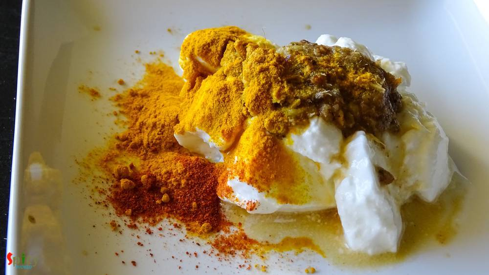
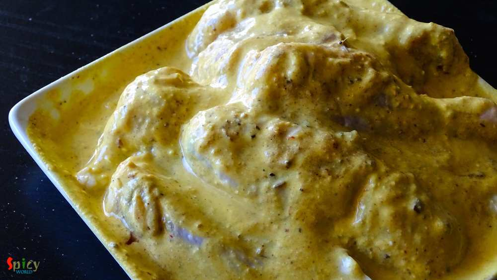
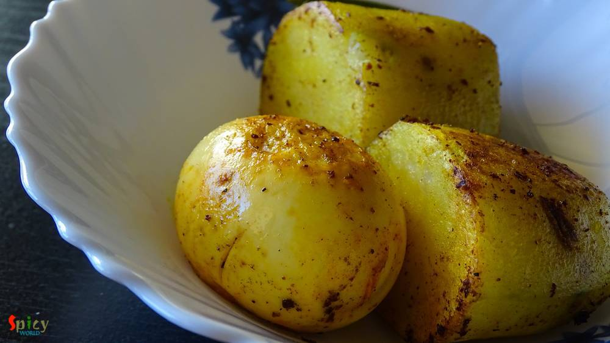
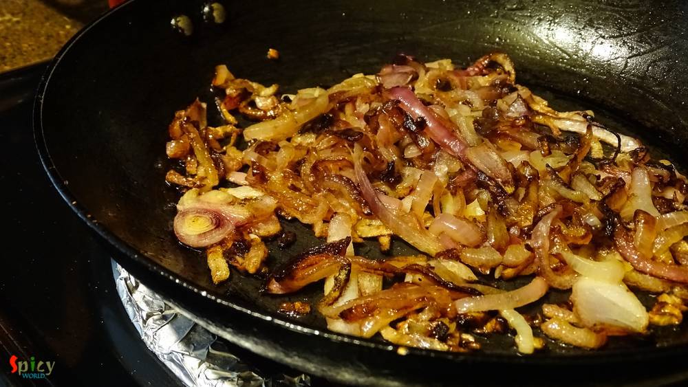
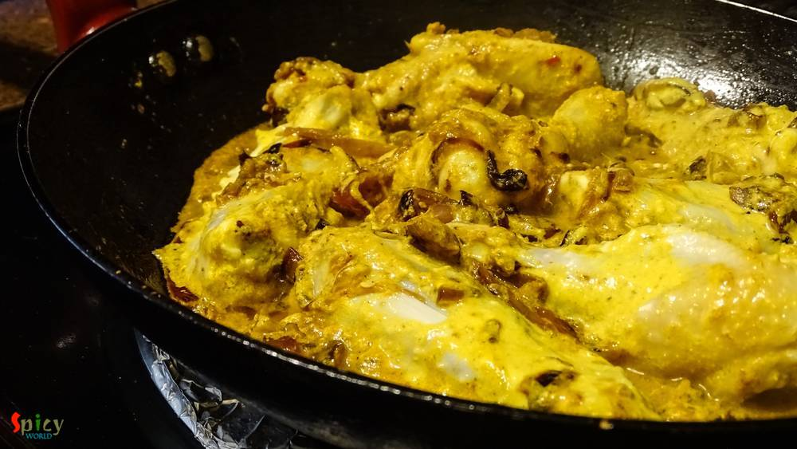
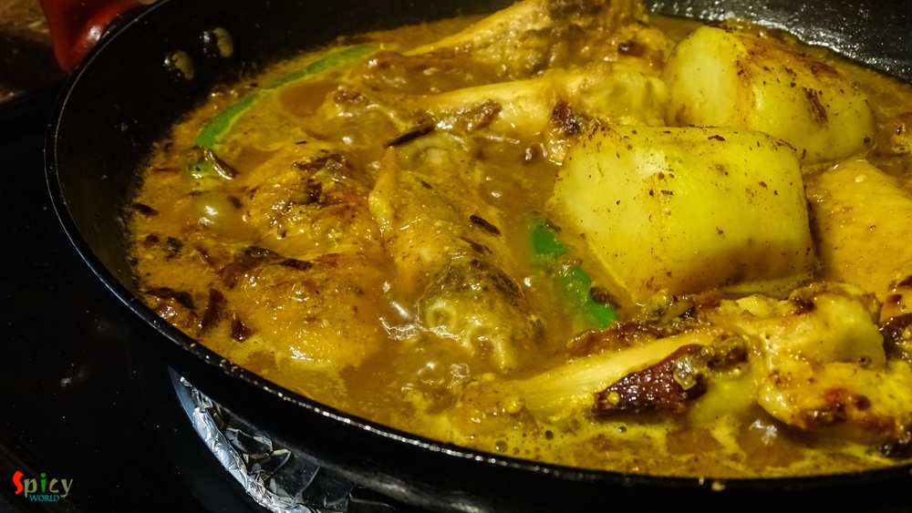
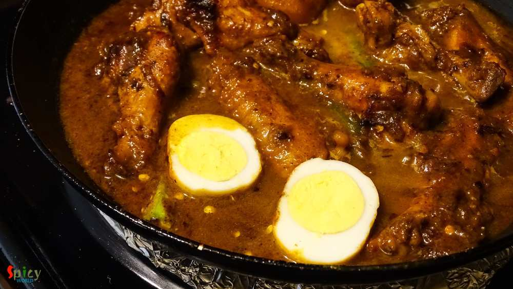
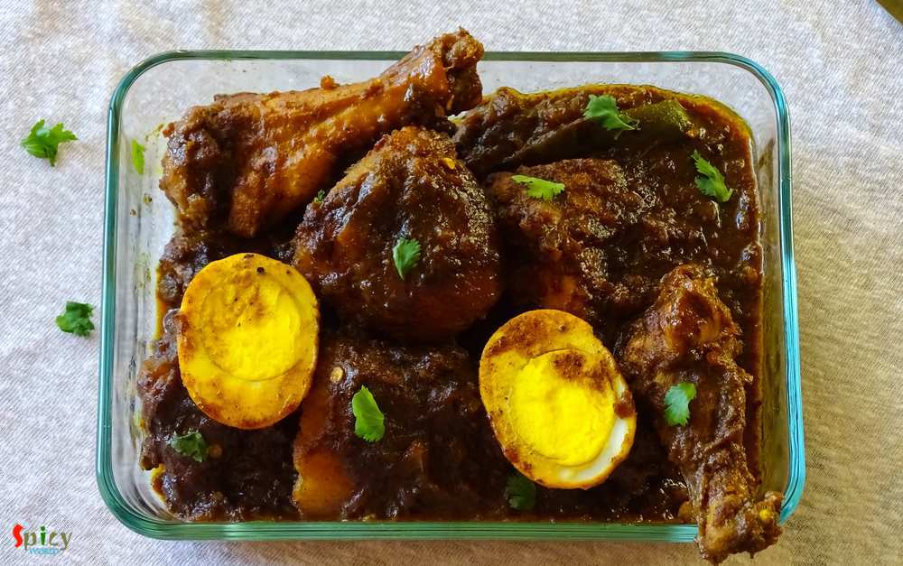

Simple and Easy Recipes
Chicken Dakbunglow / Dakbangla
© 2016 Spicy World, Published on: Sep 24, 2015
Yesterday morning during surfing net I saw an eyecatching picture of Chicken Dak Bunglow curry. It made me doing immediate preparation for dinner.Trust me, after dinner there was literally nothing in our plate except bones:-) It became so damn tasty ! I once ate the mutton version of this curry. That was also finger licking delicious, will upload that soon. Do give this recipe a try and I am sure you will never regret it.

Ingredients
- Chicken 10-15 pieces.
- 2 potatoes, cut into halves.
- 2 hard boil eggs.
- One onion thinly sliced.
- Ginger and garlic paste 2 Teaspoon.
- One tomato, chopped.
- Hung curd 4 Teaspoons.
- Two green chilies.
- Whole spices( 4 green cardemom, 4 cloves, 1 small cinnamon stick, 1 bay leaf, 5 whole black pepper )
- Spice powder( 2 Teaspoons turmeric, 1 Teaspoon red chili, 1 Teaspoon cumin, 1 Teaspoon coriander )
- Salt and sugar.
- Mustard oil.
- Warm water.


Steps
Make a paste of whole spices with 4 Teaspoons of water.
Marinate the chicken pieces with hung curd, ginger and garlic paste, spice powder and the whole spice paste.
Keep the marinated chicken in fridge for 3 - 4 hours. Don't forget to take out and bring it to room temperature (30 minutes) before start cooking.
Rub the potatoes and eggs with some salt and turmeric powder. Then shallow fry the potatoes for 5 minutes and eggs for 2 minutes in some oil. Keep aside.
Take a pan and heat the mustard oil.
Add chopped onion in hot oil. Fry this for 10 minutes.
Add the marinated chicken and cook for 15 minutes on medium flame.
Add the fried potatoes , green chilies and some warm water. Cook this in slow flame for 30 minutes.
After that add the boiled eggs. Cook this for another 2 minutes.
Check the seasoning. Chicken and potatoes should be tender and gravy should be thick.
Your chicken dak bunglow is ready ...
Serve this hot with plain rice or roti ...
")